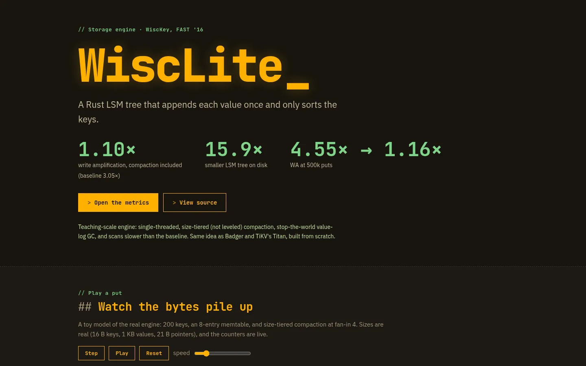
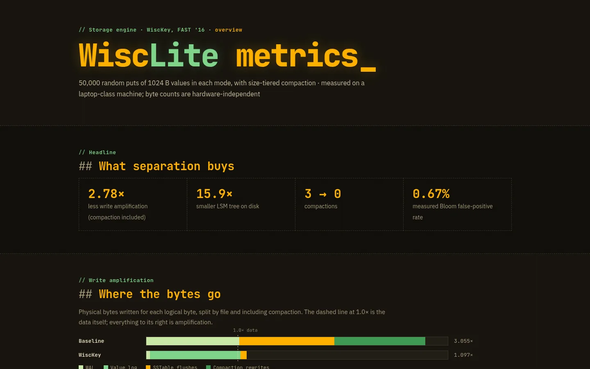
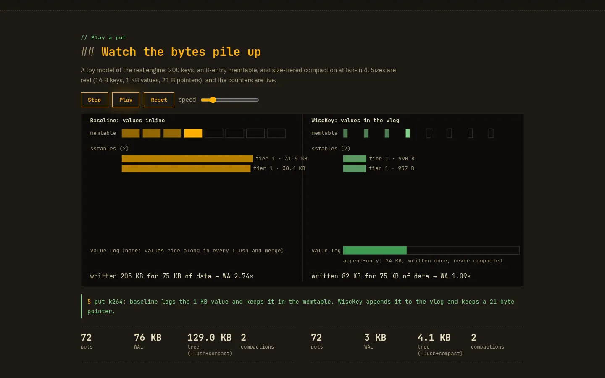

← Back to all work Tech project
WiscLite A Rust LSM-tree key-value store that separates keys from values, after the WiscKey paper (USENIX FAST ’16), with an inline-value baseline mode to measure the difference.

Landing page: API, numbered write path and a “play a put” simulation. 
Metrics dashboard: write-amplification stack, tree sizes and the compaction sweep slider. 
“Play a put”: a value goes to the vlog, the key and pointer to the WAL and memtable. Values are appended once to a checksummed value log; the LSM-tree keeps only key → (offset, length) pointers. WAL with crash recovery, sorted SSTables with Bloom filters, size-tiered compaction, value-log GC and an atomic MANIFEST as the commit point. In the 500,000-put benchmark, write amplification was 1.16× versus 4.55× for the inline baseline; range scans are slower, the paper’s known cost. CLI plus a localhost HTTP server with a JSON API and a metrics dashboard. 22 tests covering storage, crash recovery, compaction, GC and the HTTP API; the README lists the limitations openly.